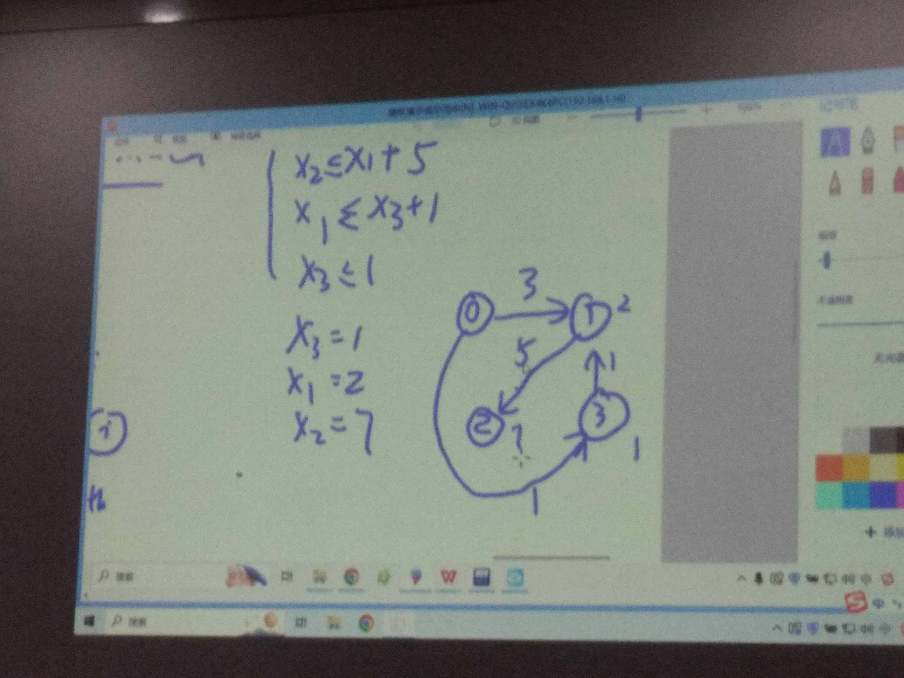
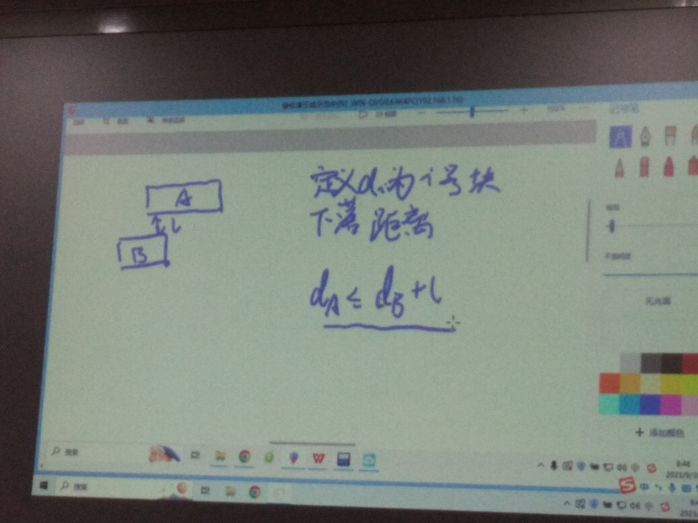
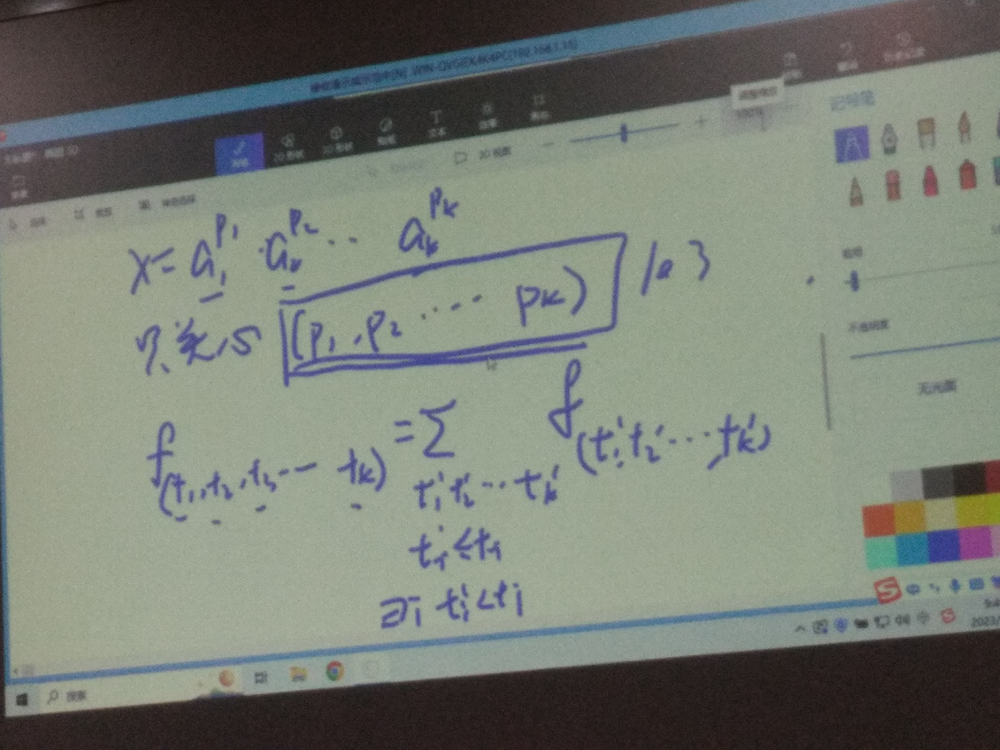
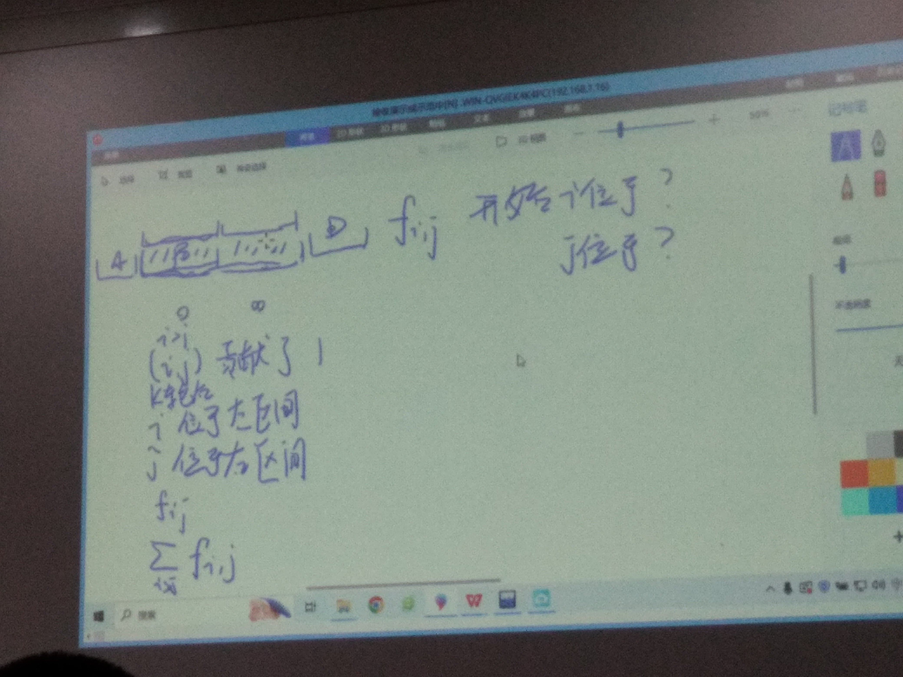
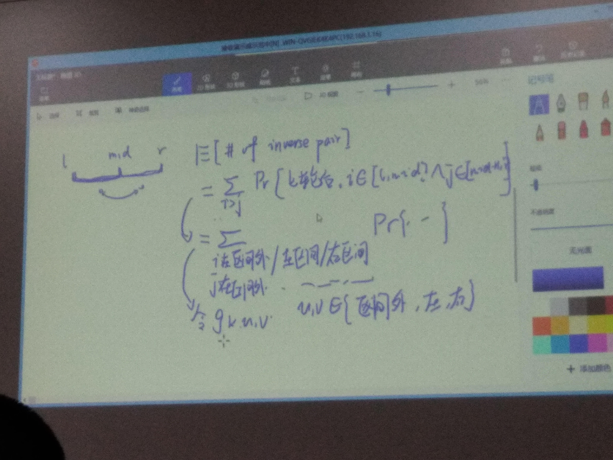
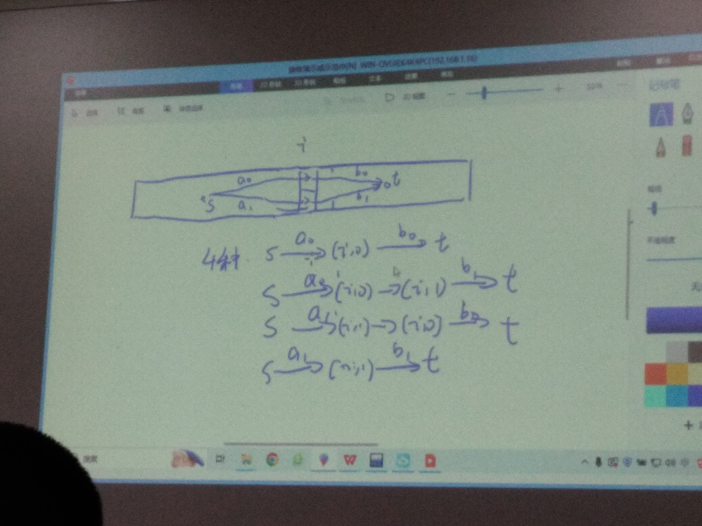

第二天
| 笔记信息 | |
|---|---|
| 作者 | Gingmzmzx |
| 时间 | 2023-9-30 |
| 教师 | 黄子宽 |
全是数学题
小提示：永远不要相信GitHub Copilot写的代码 绝对爆零
膜拜
黄子宽老师：
王廉达大佬：
上午
一、差分约束
# 例题引入
- 题目描述：
给个变量，限制且，求
- 示例：
解得
建图

# 解题：俄罗斯方块 P4184

二、搜索
# 剪枝
- 最先搜索可能性最少的点（可行性剪枝）
- 剩下的数最优情况下也不超过全局最优解则剪枝
# 一道自创题
-
题目描述
有次询问，每次询问一个数，询问每次除一个约数直到最后变为有多少种方式。
比如三种 -
题解
- 先用Pollard-Rho分解质因数
- 发现 假设我们得到
- 那么只有的无序元组有意义
- 这样本质不同的元组数量的一个粗略上线是考虑，而50的拆分数只有2e5级别
- 拆分数：一个数的所有拆分方式的数量
- 拆分数的求法：
- 例：
- 3: 1+1+1 / 1+2 / 3
- 4: 1+1+1+1 / 1+1+2 / 1+3 / 2+2 / 4
- 拆分数：一个数的所有拆分方式的数量
- 图解：

# 又一道自创题
三、二分
# 例题：最大平均子段和
给和一个长度为的序列。每次询问一个长度大于区间，使得最大。
，输出小数，精度即可
# 例题：[BalticOI 2018] 蠕虫之忧
- 任务一：M=K=1, N=1000000, Q=35 （一维）
- 做法：二分+黄金分割（优化询问次数）
- 任务二：K=1,N=M=1000,Q=3500 （二维）
- 做法：二分（横切+竖切）+黄金分割（优化询问次数）
如图：
- 做法：二分（横切+竖切）+黄金分割（优化询问次数）
- 任务三：N=M=K=500,Q=150000 （三维）
- 做法：...
总结
能不能别讲数学题了（恼😡
下午
一、二分（续上午）
# Random（原创题）
- 题目描述：
给定一个排列，随机做次交换，求最后的排列的期望
- 期望：
如果一个有的概率取值为，的概率取值为的概率取值为，那么这个的期望就是
- 期望：
- 图解：


# 旅行者（ZJOI 2016）
图解：

# CDQ分治
二、贪心
# 经典问题
-
题目描述：
有个怪物，每个怪物有和两个属性，当你打一个怪物时会先减血再加血，中途血量不能小于，问最少需要多少血量才能打完所有怪物。
-
GitHub Copilot给出的解释：
这道题目可以使用贪心算法来解决。具体做法是，我们可以按照怪物的 属性从小到大排序，然后依次遍历每个怪物，记录当前需要的最小血量和当前已经需要的血量。对于每个怪物，我们可以计算出打败它所需要的最小血量，并将其加到当前需要的血量中。最后，当前需要的血量就是打败所有怪物所需要的最小血量。以下是 C++ 的实现代码：
#include <iostream> #include <algorithm> #include <vector> using namespace std; int main() { int n; cin >> n; vector<pair<int, int>> monsters(n); for (int i = 0; i < n; i++) { cin >> monsters[i].first >> monsters[i].second; } sort(monsters.begin(), monsters.end(), [](const auto& a, const auto& b) { return a.second < b.second; }); int health = 0; int current_health = 0; for (const auto& monster : monsters) { current_health += monster.first; health = max(health, current_health); current_health -= monster.second; } cout << health << endl; return 0; }这段代码使用了
vector存储怪物的属性，使用sort函数按照 属性从小到大排序，然后依次遍历每个怪物，记录当前需要的最小血量和当前已经需要的血量。对于每个怪物，我们可以计算出打败它所需要的最小血量，并将其加到当前需要的血量中。最后，当前需要的血量就是打败所有怪物所需要的最小血量。
# 排列鞋子（IOI 2019）
三、Floyd矩阵
# 美食家（NOI 2020）
四、二维RMQ
# 例题
- 题目描述：
给定一个的矩阵，每次询问一个矩形区域的最小值
GitHub Copilot：
你可以使用二维线段树或者二维树状数组来解决这个问题。这两种数据结构都可以支持区间查询和单点修改。其中，二维线段树的时间复杂度为 ，空间复杂度为 ；二维树状数组的时间复杂度为 ，空间复杂度为 。你可以根据具体情况选择使用哪种数据结构。
五、LCA
# Tarjan离线 O(1)
利用并查集，图解如下

# LCA加强版
- 题目描述：
给定一颗个点的树，有次询问，每次给定三个点，求以为根的情况下，和的LCA
晚上
一、交互式证明
农夫山泉打钱
二、Millar-Rabin素数测试
GitHub Copilot:
- Miller-Rabin素数测试是一种用于确定给定数字是否为素数的概率性算法。它通过将一个数字与一组随机选择的基数进行测试来工作。测试的基数越多，测试的准确性就越高。以下是Python的一个示例实现。
这个实现接受一个数字 和一个可选参数 ，它指定要测试的基数数量。 的默认值为 ，这通常对于大多数用例来说已经足够了。该函数返回import random def is_prime(n, k=5): if n < 2: return False for _ in range(k): a = random.randint(2, n - 1) if pow(a, n - 1, n) != 1: return False return TrueTrue如果 可能是素数，否则返回False。 - Miller-Rabin素数测试的基本思想是利用费马小定理，对于一个素数，对于任意整数，都有。但是对于合数，这个等式并不一定成立。Miller-Rabin素数测试通过多次随机选择，来验证这个等式是否成立，从而判断一个数是否为素数。Miller-Rabin素数测试的时间复杂度为，其中k为测试次数，n为待测试的数。Miller-Rabin素数测试的正确性为。在实际应用中，通常会进行多次测试来提高正确性。Miller-Rabin素数测试是一种常用的素数测试算法，被广泛应用于密码学、计算机安全等领域。
- Miller-Rabin素数测试的实现中，随机选择的基数数量越大，测试的正确性就越高，但是时间复杂度也会相应增加。在实际应用中，通常会根据需要进行权衡，选择一个合适的值来进行测试。另外，Miller-Rabin素数测试也可以用于生成大素数，只需要不断随机生成大数，然后进行Miller-Rabin素数测试，直到找到一个素数为止。
- 如果你想要测试一个数是否为素数，可以调用
is_prime(n)函数，其中 为待测试的数。如果你想要增加测试的次数，可以传入第二个参数 ，例如is_prime(n, 10)表示进行次测试。在实际应用中，通常会根据需要进行权衡，选择一个合适的 值来进行测试。 - 如果你想要使用Miller-Rabin素数测试来生成大素数，可以使用以下代码：
这个函数接受一个参数 ，表示要生成的素数的位数。函数会不断随机生成一个 位的数，然后使用Miller-Rabin素数测试来判断这个数是否为素数，直到找到一个素数为止。这个函数的时间复杂度取决于生成的素数的大小和Miller-Rabin素数测试的次数，通常需要进行多次测试才能得到一个足够大的素数。import random def generate_prime(n): while True: p = random.randint(2**(n-1), 2**n-1) if is_prime(p): return p